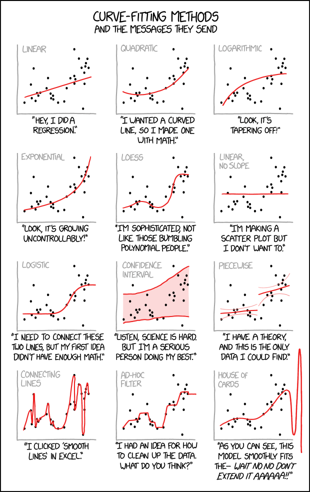

\(K\) Nearest Neighbors
Applied Machine Learning
Agenda
- Review of Homeworks
- A human understanding of regression
- Dinner break
- Preprocessing and BoxCox
- The \(K\)NN algorithm and the Confusion Matrix
Homework
HW1
- We need to work on writing quality.
- We need to work on RMSE intepretation.
- We need to work on using
summaryresponsibly. - We need to work on applying lecture topics to leading questions.
- We would benefit from use of the
embed-resourcesoption in Quarto.
HW1 Sols Posted
HW2
- Think
- Pair
- Share
Today
Setup
Import
- Python base data stack
- R compatibility
ML Library
Setup
pyreadrto read in an R dataset.
Reporting Impact from Regressions
Correlation
http://guessthecorrelation.com/ …my high score is 72 (Jameson 122)

Calculating correlation
Exercise
- Calculate the correlation between \(\log\)(price) and points…
- …by variety…
- …for Oregon Chardonnay, Pinot Noir and Pinot Gris…
- …in the same expression!
Solution
- Make a function…
Eval
Visualizing these different correlations

Graphing residuals (bad)
Graphing residuals (good)
- Clearly should’ve made a function here.
Try it

Try it on year
Interpreting the coefficients
- Before examining many coefficients, a helper.
% Change
get_pct = lambda x : (np.exp(x)- 1) * 100
coef = get_coef(wine, "points", "lprice")
coef, get_pct(coef) (0.10392268891742625, 10.951467381914615)- We logged the dependent variable (price)
- A 1 point ratings increase = ~10% price
- That is, a percent change in rating to an absolute change in the dependent variable.
- \((e^x - 1)*100\)
Interpreting the coefficients
(0.017641923387450218, 1.779846130624252)- This is a de facto measure of inflation.
Some Examples
\(\log\) feature
wine['lpoints'] = np.log(wine['points'])
coef = get_coef(wine, "lpoints", "price")
coef, get_pct(coef) (362.4947164430504, 2.6881597265771833e+159)- What does the sign (positive or negative) tell us?
- Was \(\log\) appropriate here?
LogLog (also elasticity)
(9.218567454376164, 1008161.0178417759)…a 1% increase in ratings gives said increase in price on average
Summary
- Only the dependent/response variable is log-transformed.
- Exponentiate the coefficient.
- Subtract one from this number
- Multiply by 100.
- This gives the percent increase (or decrease).
Units
- Change is per one-unit increase in the independent variable.
- Here, independent is points.
- Dependent is price.
Example
- For every 1% increase in the independent variable…
- Basically, one point
- Our dependent variable increases by about 8.3%.
- A $30 bottle of wine scoring 90 would be worth $32.50 as a 91.
Graphing points by variety
Summary
(tmp <- wine %>%
filter(province=="Oregon") %>%
filter(variety %in% c("Chardonnay","Pinot Noir","Pinot Gris")) %>%
group_by(variety) %>%
summarise(mean=mean(points)))- What are the percentage differences here?
Regression
model <- lm(points~variety,
filter(wine,province=="Oregon",variety %in% c("Chardonnay","Pinot Noir","Pinot Gris")))
get_regression_table(model)- What types of variables are we considering here?
Assumptions of linear regression
- Linearity of relationship between variables
- Independence of the residuals
- Normality of the residuals
- Equality of variance of the residuals
Linearity of relationship

What would the residuals look like?
Independence
Given our original model of \[ \log(\text{price})=m*\text{Points}+b \]
are there any problems with independence?
How could we check?
Normality
Equality of variance
No equality in the variance
Credit: Modern Dive (click)

Dinner
Preprocessing and BoxCox
Setup
- Pivot to pinot.
- Say “\(\pi^0\)”
Preprocessing
- Box-Cox transformations use maximum likelihood estimate to estimate value for \(\lambda\)
\[ y(\lambda) = \frac{x^{\lambda}-1}{\lambda} \]
- The goal is to make data seem more like a normal distribution.
in R
- LaTeX
\[ y(\lambda) = \frac{x^{\lambda}-1}{\lambda} \]
- R
Examples
- When \(\lambda=1\), there is no transformation
\[ y(1) = \frac{x^{\lambda}-1}{\lambda} = \frac{x^{1}-1}{1} = x-1 \approx x \]
\[ f = y(-1) \implies f(x) \approx x \]
Examples
- When \(\lambda=0\), it is log transformed
\[ y(0) = \frac{x^{\lambda}-1}{\lambda} = \frac{x^{0}-1}{0} \]
\[ f = y(0) \implies f(x) \approx \log(x) \]
- Zero is a special case, but using a little thing called “calculus” this sorta makes sense.
- Basically, negative infinity at 0, then increase slowly once positive.
\(\lambda = 0\)
Examples
\[ y(1) = \frac{x^{\lambda}-1}{\lambda} = \frac{x^{.5}-1}{.5} = 2\times(\sqrt{x}-1) \approx \sqrt{x} \]
\[ f = y(.5) \implies f(x) \approx \sqrt{x} \]
Examples
- When \(\lambda=-1\), it is an inverse
\[ y(1) = \frac{x^{\lambda}-1}{\lambda} = \frac{x^{-1}-1}{-1} = \frac{x^{-1}}{-1}+\frac{-1}{-1} = \frac{1}{-x}-1 = -x \] \[ f = y(.5) \implies f(x) \approx -x \]
Just use the function
- R: envstats
Just use the function
- Py: scipy.stats
On Python
- I like the Python boxcox documentation:
Caret preprocessing is so easy!
Or is it?
But wait… what is wrong here?
wino <- wine %>%
mutate(year_f = as.factor(year))
wino <- wino %>%
preProcess(method = c("BoxCox","center","scale")) %>%
predict(wino)
head(wino %>% select(starts_with("year")))- Are years normally distributed?
The \(K\)NN Algorithm
Algorithm
- Load the data
- Initialize \(K\) to your chosen number of neighbors
- For each example in the data
- Calculate the distance between the query example and the current example from the data.
- Add the distance and the index of the example to an ordered collection
- Sort the ordered collection of distances and indices from smallest to largest (in ascending order) by the distances
- Pick the first \(K\) entries from the sorted collection
- Get the labels of the selected \(K\) entries
- If regression, return the mean of the \(K\) labels
- If classification, return the mode of the \(K\) labels
Basis
- We assume:
- Existing datapoints in something we think of as a space
- That is, probably two numerical value per point in a coordinate plane
- Categorical is fine - think a Punnett square
- Existing datapoints are labelled
- Numerical or categorical still fine!
- Existing datapoints in something we think of as a space
- To visualize, we will have a 2d space with color labels.
Let’s draw it

Let’s draw it 2

Let’s draw it 3
.png)
Engineering some features
- Create an “other” for most tasters.
Engineering some features
- Create dummys for years, tasters
Engineering some features
- Convert everything to snake case.
Engineering some features
- Add indicators for 3 tasting notes.
Engineering some features
- Let’s see it
Split
Simple model
- Specify a \(K\)NN model.
Confusion matrix
- Let’s look at Kappa.
Kappa \(\kappa\) statistic
Kappa statistic is a measurement of the agreement for categorical items Kappa can be used to assess the performance of kNN algorithm.
\[ \kappa = \dfrac{P(A)-P(E)}{1 - P(E)} \]
where \(P(A)\) is the relative observed agreement among raters, and \(P(E)\) is the proportion of agreement expected between the classifier and the ground truth by chance.
Kappa \(\kappa\) statistic
Compares observed accuracy against what would be expected by a random classifier.
- < 0.2 (not so good)
- 0.21 - 0.4 (ok)
- 0.41 - 0.6 (pretty good)
- 0.6 - 0.8 (great)
- > 0.8 (almost perfect)
…whoa! What’s going on here?
Overfitting… or a leak?
Review the dataframe
Determine what dominates
Test
Fixing the leak
- Dastardly humans, always existing in a physical location.
Rerun
Confusion matrix
With parameter tuning over \(K\)
Confusion Matrix
Tuning and subsampling
Tuning plot
Group modeling problem I
- Practice running different versions of the model
- Create some new features and…
- See if you can achieve a Kappa >= 0.5!
\[ \kappa \geq 0.5 \]